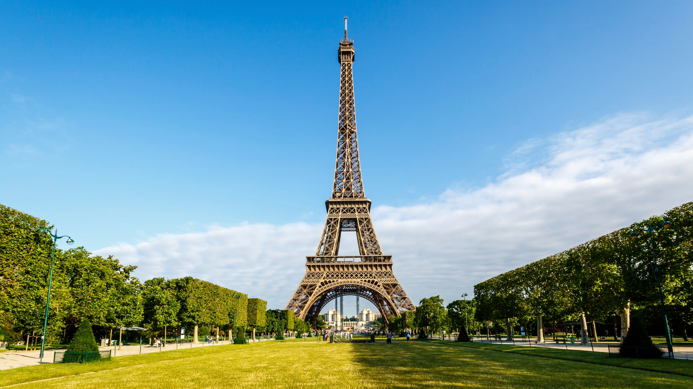
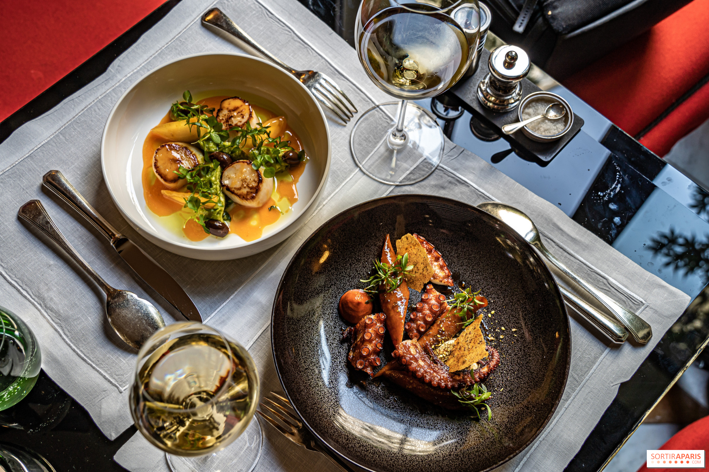
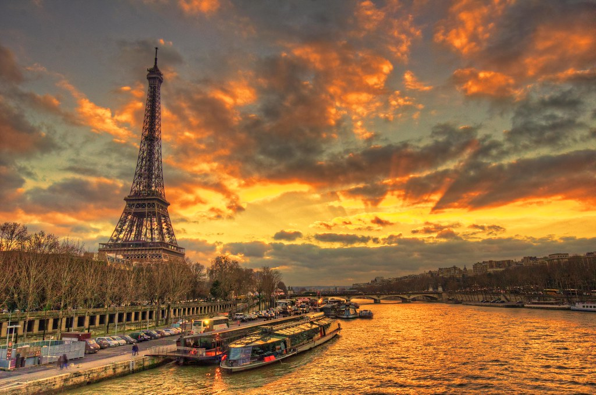

Exploring Paris
Date: [10/01/2024]

Your travel story and experiences...
Paris, the enchanting city of lights, never fails to captivate the heart. From the iconic Eiffel Tower
to the charming streets of Montmartre, every corner of Paris tells a story.
Eiffel Tower at Sunset:
Our first evening was spent at the Eiffel Tower, where we witnessed the sun setting behind this
architectural masterpiece. The city bathed in hues of orange and pink, creating a magical atmosphere.
Exploring Montmartre:
Wandering through the artistic streets of Montmartre, we discovered cozy cafes, bustling markets, and
local artists at work. The Sacré-Cœur Basilica offered panoramic views of the city, making the climb
worthwhile.
Louvre Museum:
A day at the Louvre was like a journey through time. From the Mona Lisa's enigmatic smile to the
majestic Winged Victory of Samothrace, the art and history within those walls were awe-inspiring.
Culinary Delights in Paris:
Date: January 11, 2024

Parisian cuisine is a symphony of flavors, and our taste buds danced with joy during our culinary
adventure.
Le Marais District:
Le Marais, with its narrow streets, is a gastronomic paradise. We indulged in delectable pastries,
savory crepes, and rich coffee at charming local cafes.
Fine Dining at a Brasserie:
One evening, we experienced the elegance of a Parisian brasserie, savoring escargot, coq au vin, and
decadent desserts.
Street Market Treasures:
Exploring local markets, we sampled fresh cheeses, baguettes, and vibrant produce. Each bite was a
celebration of French culinary artistry.
Riverside Stroll along the Seine:
Date: January 12, 2024

The Seine River, with its romantic bridges and iconic landmarks, provided a picturesque backdrop for
our leisurely stroll.
Notre-Dame Cathedral:
We admired the timeless beauty of Notre-Dame Cathedral, its Gothic architecture standing as a testament
to centuries of history.
Seine River Cruise:
As night fell, we embarked on a Seine River cruise. The illuminated cityscape, including the Eiffel
Tower, created a mesmerizing spectacle.